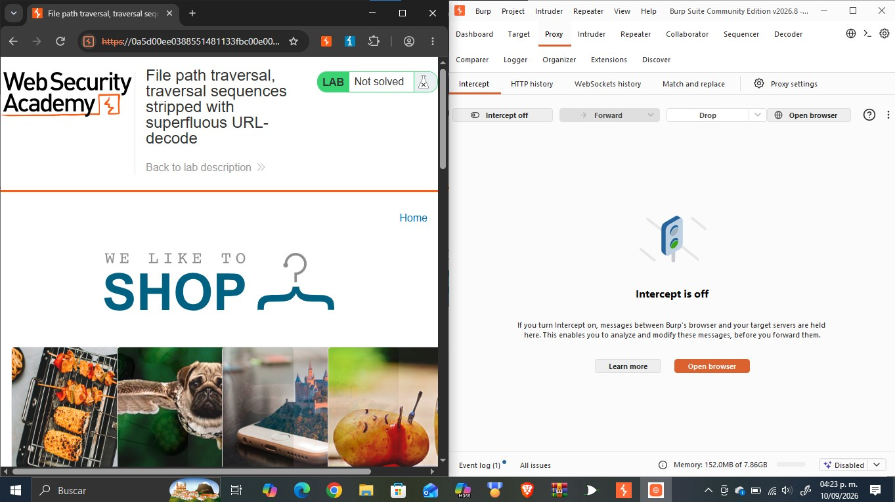
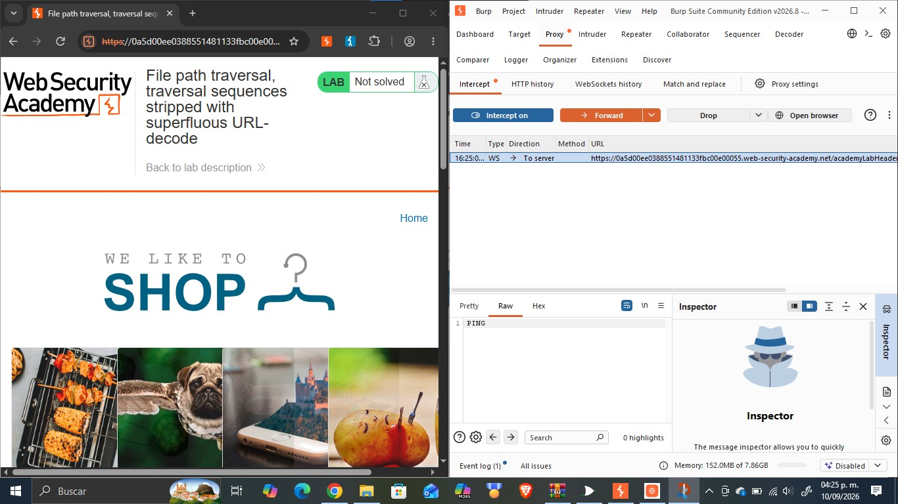
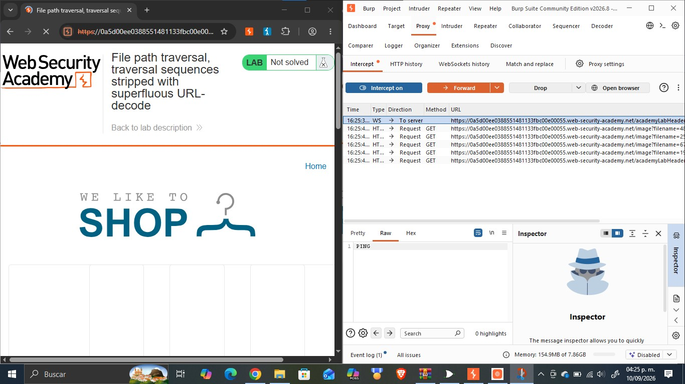
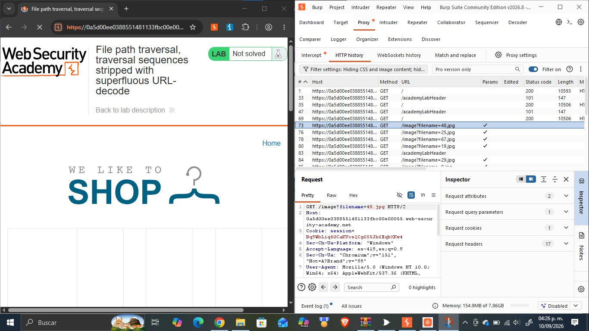
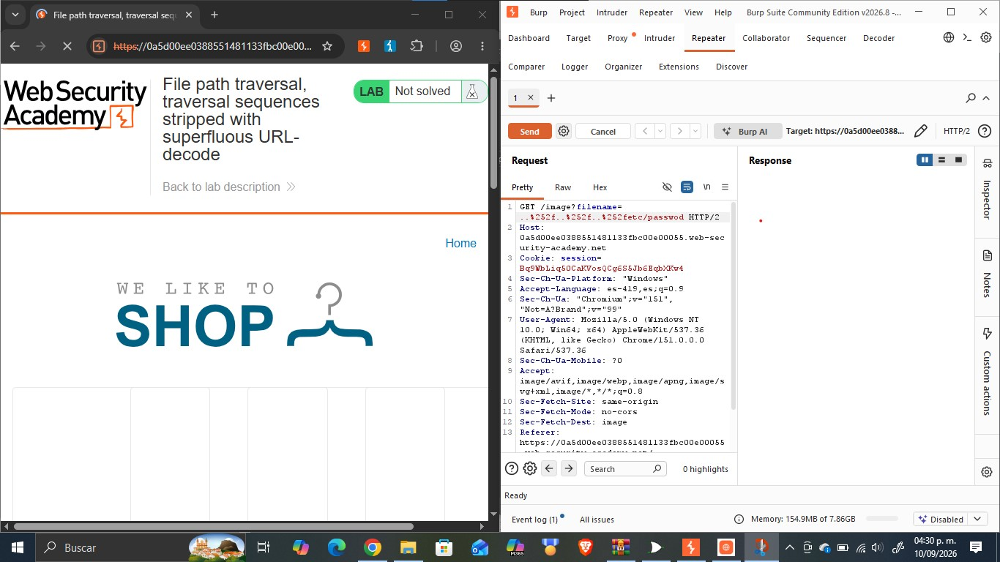
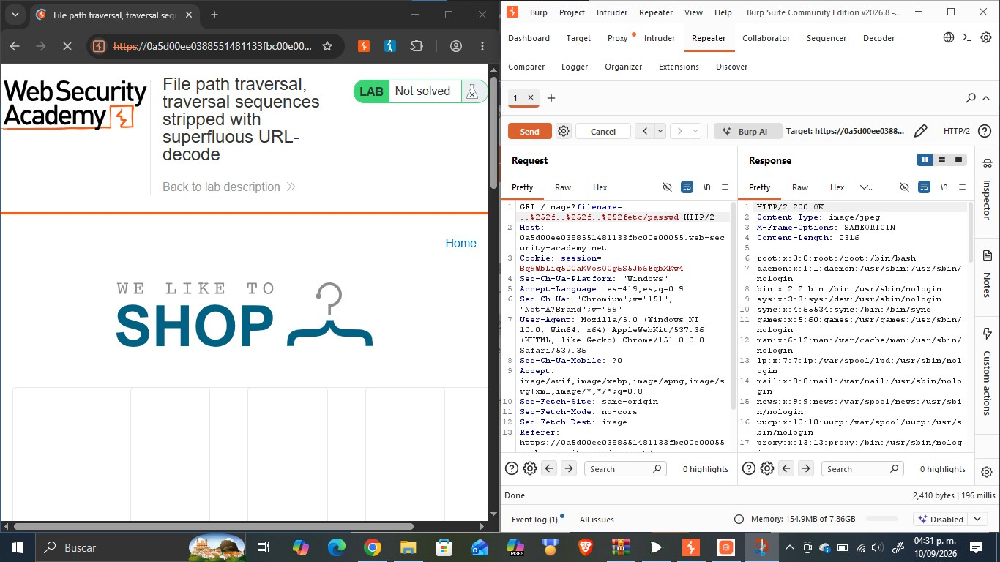
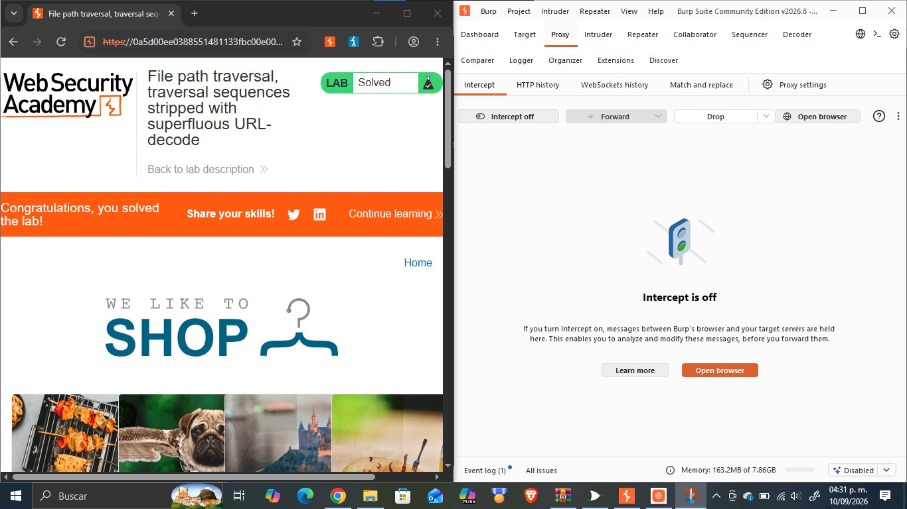

Objetivo
Este reporte documenta la resolución del laboratorio «File path traversal, traversal sequences stripped with superfluous URL-decode» de PortSwigger Web Security Academy, cuyo objetivo es explotar una vulnerabilidad de path traversal en la funcionalidad de visualización de imágenes de una tienda en línea, sorteando un filtro que bloquea las secuencias de traversal antes de realizar una decodificación URL superflua sobre la entrada, con el fin de acceder a archivos del sistema operativo del servidor que no deberían ser accesibles públicamente. La actividad forma parte del portafolio de evidencias «Road to Hall of Fame» de la asignatura CNO IV Seguridad Informática y profundiza en un tercer obstáculo frente al path traversal categoría A01:2021 Broken Access Control del OWASP Top 10, relacionado con el orden en que se aplican la validación y la decodificación de la entrada, así como en las técnicas para evadirlo usando Burp Suite.
Desarrollo
Esta sección documenta el laboratorio realizado en la práctica: su ficha técnica, la fundamentación de la vulnerabilidad explotada, el procedimiento seguido paso a paso con la evidencia fotográfica integrada en cada paso, el análisis del payload utilizado y las medidas de mitigación recomendadas.
| Nombre del Laboratorio | Nivel | Tipo de Explotación | Objetivo del laboratorio |
|---|---|---|---|
| File path traversal, traversal sequences stripped with superfluous URL-decode | Practitioner | Path Traversal / Directory Traversal bypass de un filtro de secuencias de traversal mediante doble codificación URL (superfluous URL-decode) en el parámetro filename. | Explotar la vulnerabilidad de path traversal presente en la funcionalidad de visualización de imágenes de producto, evadiendo el filtro de secuencias «../» mediante doble codificación URL, para recuperar el contenido del archivo /etc/passwd del servidor. |
Explicación técnica de la vulnerabilidad
Este laboratorio presenta un tercer tipo de defensa contra el path traversal: la aplicación bloquea cualquier entrada que contenga literalmente la secuencia «../» y, únicamente después de pasar ese control, realiza una decodificación URL adicional (superflua) sobre el valor recibido antes de usarlo para localizar el archivo. El problema surge del orden en que ocurren dos decodificaciones distintas. Cuando el navegador envía la petición, el servidor web ya realiza automáticamente una primera decodificación URL de los parámetros como parte del procesamiento estándar de la petición HTTP; si un atacante codifica dos veces el carácter «/» (es decir, en lugar de «%2f» envía «%252d» donde «%25» es el código de «%», obteniendo «%252f»), esa primera decodificación automática solo convierte «%252f» en «%2f», que sigue sin parecerse a «../» y por lo tanto supera sin problema el filtro de secuencias de traversal. Sin embargo, la aplicación aplica luego, de forma superflua e innecesaria, una segunda decodificación URL explícita sobre el valor ya validado; esta segunda decodificación convierte «%2f» en «/», reconstituyendo la secuencia «../» completa después de que el control de seguridad ya se ejecutó. En consecuencia, el filtro nunca llega a ver la secuencia peligrosa, porque esta solo se materializa en un paso posterior que la propia aplicación introduce innecesariamente. Esta vulnerabilidad ilustra un obstáculo distinto a los de los laboratorios anteriores: la falla no está en cómo se filtra el patrón, sino en ejecutar una operación de decodificación después de la validación de seguridad en lugar de antes (o de decodificar una sola vez, en el momento correcto). Corresponde igualmente a la categoría A01:2021 – Broken Access Control del OWASP Top 10.
Procedimiento paso a paso
Paso 1. Se abrió el laboratorio «File path traversal, traversal sequences stripped with superfluous URL-decode» en el navegador integrado de Burp Suite, con Intercept desactivado, verificando el estado inicial «Not solved».

Paso 2. Se activó la opción «Intercept on» en la pestaña Proxy de Burp Suite y se recargó la página principal, capturando el tráfico WebSocket y las primeras peticiones enviadas por el navegador hacia el servidor.

Paso 3. Al reenviar (Forward) las peticiones interceptadas, se observó en el historial HTTP que el navegador solicitaba múltiples recursos a través del endpoint /image, cada uno con un parámetro filename distinto, correspondientes a las imágenes de los productos de la tienda.

Paso 4. Se seleccionó la petición GET /image?filename=48.jpg en el historial HTTP y se examinaron sus cabeceras completas para confirmar la estructura exacta de la petición, incluyendo la cookie de sesión y el método utilizado.

Paso 5. La petición se envió a la pestaña Repeater de Burp Suite (Send to Repeater) para poder modificarla y reenviarla de forma controlada las veces que fuera necesario.
Paso 6. En Repeater se sustituyó el valor del parámetro filename por la secuencia con doble codificación URL ..%252f..%252f..%252fetc/passwd, de forma que la primera decodificación automática del servidor solo revele «%2f» (sin activar el filtro de secuencias «../»), dejando que la propia decodificación superflua de la aplicación reconstruya la secuencia de traversal después del control de seguridad.

Paso 7. Se envió la petición modificada mediante el botón Send y se analizó la respuesta del servidor, confirmando el código de estado 200 OK y verificando que el cuerpo de la respuesta contenía el listado completo de usuarios del sistema, lo que evidenció la lectura exitosa del archivo /etc/passwd.

Paso 8. Se regresó al navegador y se recargó la página del laboratorio, confirmando que el banner superior mostraba el mensaje «Congratulations, ¡you solved the lab!» y que el estado del laboratorio había cambiado de «Not solved» a «Solved».

Explicación del payload
El payload utilizado fue ..%252f..%252f..%252fetc/passwd, enviado como valor del parámetro filename en la petición GET /image?filename=..%252f..%252f..%252fetc/passwd. La cadena «%25» es la codificación URL del carácter «%»; por lo tanto, «%252f» es, en realidad, la letra «/» codificada dos veces (una codificación «%2f», y esa misma codificación vuelta a codificar). Cuando el servidor recibe la petición, su capa de procesamiento HTTP realiza automáticamente una primera decodificación URL estándar de los parámetros: en este paso, «%252f» se convierte en «%2f», que a simple vista no contiene el carácter «/» ni la secuencia «../», por lo que el filtro de secuencias de traversal del servidor, al inspeccionar el valor ya decodificado una vez, no detecta ningún patrón prohibido y permite continuar. Sin embargo, la aplicación ejecuta después un segundo paso de decodificación URL, superfluo, sobre ese mismo valor ya validado; esta segunda decodificación convierte «%2f» en «/», con lo que la secuencia completa «..%252f» termina resolviéndose en «../» justo antes de usarse para localizar el archivo en el sistema. Al repetir el bloque tres veces se reconstruyen los tres niveles necesarios para llegar a la raíz del sistema de archivos, y se añade la ruta etc/passwd. El payload es efectivo porque aprovecha que el control de seguridad se aplica sobre una representación de la entrada (decodificada una vez) que es distinta de la representación final que realmente se usa para acceder al archivo (decodificada dos veces).
Mitigación recomendada
Para prevenir y corregir esta vulnerabilidad se recomienda:
- Decodificar la entrada por completo (todas las capas de codificación URL necesarias) antes de aplicar cualquier validación o filtrado de secuencias de traversal, nunca después.
- Evitar decodificaciones URL adicionales y superfluas dentro de la lógica de la aplicación; delegar la decodificación exclusivamente en la capa de procesamiento HTTP estándar, ejecutada una sola vez, antes de cualquier control de seguridad.
- Rechazar cualquier entrada que, tras la decodificación completa, contenga secuencias «../», rutas absolutas o caracteres de codificación anidada (p. ej. «%25» seguido de un código hexadecimal), en lugar de intentar sanear estos patrones.
- Emplear una lista blanca (allow-list) de nombres de archivo o un identificador indirecto (p. ej. un ID numérico mapeado internamente al archivo real) en lugar de aceptar el nombre de archivo directamente del cliente.
- Canonicalizar la ruta final (tras toda decodificación) y verificar que continúe dentro del directorio base permitido antes de leer el archivo.
- Incorporar pruebas de seguridad (SAST/DAST) con payloads de doble codificación y otras variantes de bypass dentro del ciclo de desarrollo seguro, para detectar controles aplicados en el orden incorrecto.
Resultados
Se logró explotar exitosamente la vulnerabilidad de path traversal presente en el endpoint /image, evadiendo el filtro de secuencias «../» mediante doble codificación URL. Al sustituir el parámetro filename por ..%252f..%252f..%252fetc/passwd, se obtuvo una respuesta HTTP 200 OK cuyo cuerpo contenía el archivo /etc/passwd completo del servidor, evidenciando cuentas del sistema como root, daemon, bin, sys y www-data, entre otras. Este hallazgo fue confirmado por el propio laboratorio de PortSwigger, que actualizó automáticamente el estado de «Not solved» a «Solved» al detectar la lectura del archivo objetivo. El resultado demuestra que aplicar controles de seguridad sobre una representación de la entrada distinta de la que finalmente se utiliza en este caso, validar antes de una decodificación adicional crea una ventana de evasión, y refuerza la importancia de decodificar completamente la entrada antes de validarla, en lugar de hacerlo en pasos separados.
Conclusión
Este laboratorio permitió comprender que el orden en que se aplican la validación y la decodificación de una entrada es tan importante como el propio contenido de la validación: un filtro correcto puede ser completamente inútil si se aplica sobre una representación de los datos distinta de la que finalmente procesa el sistema. Se reforzó el uso de Burp Suite en particular Repeater para construir y verificar un payload con doble codificación URL capaz de sobrevivir al filtro del servidor. Esta actividad complementa los contenidos de la asignatura CNO IV Seguridad Informática al mostrar que las revisiones de seguridad deben rastrear todas las transformaciones que sufre una entrada (decodificaciones, normalizaciones, conversiones) y en qué momento exacto del flujo se ejecuta cada control, un principio aplicable a numerosas categorías del OWASP Top 10 más allá de path traversal. Como siguiente paso dentro del portafolio «Road to Hall of Fame», se continuará documentando variantes adicionales de esta vulnerabilidad.
Referencias bibliográficas
- PortSwigger. (s.f.). File path traversal, traversal sequences stripped with superfluous URL-decode. PortSwigger Web Security Academy. https://portswigger.net/web-security/file-path-traversal/lab-superfluous-url-decode
- PortSwigger. (s.f.). Path traversal. PortSwigger Web Security Academy. https://portswigger.net/web-security/file-path-traversal
- OWASP. (2021). A01:2021 – Broken Access Control. OWASP Top 10. https://owasp.org/Top10/A01_2021-Broken_Access_Control/
- PortSwigger. (s.f.). Burp Suite documentation. https://portswigger.net/burp/documentation